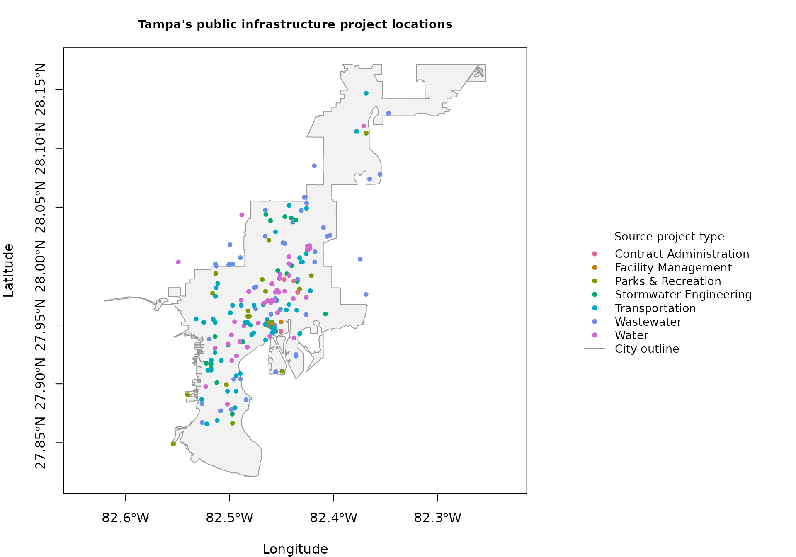

Where Are Tampa's Public Infrastructure Projects?
Source:vignettes/mapping-capital-improvements.Rmd
mapping-capital-improvements.Rmd1. What will we investigate?
Where does Tampa’s public capital-project map record infrastructure work, and how do the locations differ by the City’s project-type labels? We will map the City’s published project locations against its shoreline-adjusted boundary, then check which neighborhood labels appear most often. These records describe mapped work, not the City’s complete investment ledger.
You need basic R and the optional sf package, which
stores tables with coordinates and shapes. The map uses base R; no other
plotting package is needed. Install these packages once, then load them
in each new session:
install.packages(c("tampaBayOpenData", "sf"))Installation and retrieval need an internet connection. The rendered page uses real data saved on October 24, 2026 (Eastern time), so ordinary builds work offline. Run the code below in order to retrieve current data; the section at the end explains how to render the whole page with live data.
2. Find the relevant datasets
Search the package’s checked catalog for capital projects in Tampa. This search reads the bundled catalog without contacting a publisher.
project_matches <- tbod_search_datasets(
"capital", jurisdiction = "tampa", source = "checked"
)
project_matches[, c("id", "title", "geometry_type")]
#> # A tibble: 1 × 3
#> id title geometry_type
#> <chr> <chr> <chr>
#> 1 capital-projects Capital improvement projects esriGeometryPointThe capital-projects entry contains points: each point
marks a location. A line could trace a road or pipe, and a polygon could
outline a work area; this checked project entry contains neither. We use
the separate city-boundary polygon only as a backdrop, not
as another set of projects.
Check the source description and exact field names before retrieving records. The saved schema and source notes below also work offline.
project_info <- tbod_dataset_info("capital-projects")
project_info[c("publisher", "source_url", "scope_note")]
#> $publisher
#> [1] "City of Tampa"
#>
#> $source_url
#> [1] "https://tampa.maps.arcgis.com/home/item.html?id=2226a20de08641e38cedd1c2d7cac69e"
#>
#> $scope_note
#> [1] "The service description says its definition query selects Show to Public = Yes, while the layer metadata does not expose that definition expression. Coordinates use ArcGIS WKID 103023 / latestWKID 6443, in feet, rather than the Web Mercator CRS used by the other selected layers."
tbod_dataset_info("city-boundary")[c("title", "geometry_type")]
#> $title
#> [1] "Tampa boundary (shoreline representation)"
#>
#> $geometry_type
#> [1] "esriGeometryPolygon"
project_fields <- c("OBJECTID", "projid", "projname", "projtype", "Neighborhood")
project_schema <- tbod_schema("capital-projects")
project_schema$fields[
match(project_fields, project_schema$fields$name),
c("name", "alias", "type")
]
#> # A tibble: 5 × 3
#> name alias type
#> <chr> <chr> <chr>
#> 1 OBJECTID OBJECTID esriFieldTypeOID
#> 2 projid Project Identifier esriFieldTypeString
#> 3 projname Project Name esriFieldTypeString
#> 4 projtype Project Type esriFieldTypeString
#> 5 Neighborhood Neighborhood esriFieldTypeStringOBJECTID identifies a feature row; projid
is the publisher’s project identifier and can repeat across locations.
projname, projtype, and
Neighborhood provide the source name, type, and
neighborhood label. We keep every feature row rather than assuming each
is a unique project.
3. Retrieve the locations and boundary
spatial = TRUE returns an sf table with a
geometry column, which we need for mapping. out_sr = 4326
requests longitude and latitude for both layers; using the same
coordinate reference system lets their coordinates line up.
capital_projects <- tbod_get_dataset(
"capital-projects", fields = project_fields,
spatial = TRUE, out_sr = 4326, limit = 1000
)
tampa_boundary <- tbod_get_dataset(
"city-boundary", fields = "OBJECTID",
spatial = TRUE, out_sr = 4326, limit = 100
)These limits comfortably covered the saved example’s 201 project features and one boundary feature. Check completeness before interpreting the map: if the publisher grows beyond a limit, stop and review the request rather than mapping an unmarked preview.
project_source <- tbod_provenance(capital_projects)
boundary_source <- tbod_provenance(tampa_boundary)
if (!isTRUE(project_source$complete) || !isTRUE(boundary_source$complete)) {
stop("Incomplete download: review the limits before mapping.")
}
if (nrow(capital_projects) == 0 || nrow(tampa_boundary) == 0) {
stop("A source returned no features.")
}
stopifnot(isTRUE(sf::st_crs(capital_projects)$epsg == 4326),
isTRUE(sf::st_crs(tampa_boundary)$epsg == 4326))
project_source[c("retrieved_at", "returned_rows", "complete")]
#> $retrieved_at
#> [1] "2026-10-25 02:35:57 UTC"
#>
#> $returned_rows
#> [1] 201
#>
#> $complete
#> [1] TRUEThe displayed provenance is a named list: retrieved_at
dates this download, returned_rows counts feature rows, and
complete says whether all matching rows were retrieved.
Compare the timestamp when revisiting the map; an older download can
explain differences from the City’s current display.
Keep the source objects if you want to revisit this analysis.
saveRDS() preserves their geometry and retrieval provenance
together.
4. Create the map
The package retains missing coordinates as empty geometries. Set those rows aside for mapping and report how many were excluded; they remain in the original table.
missing_geometry <- sf::st_is_empty(capital_projects)
sum(missing_geometry)
#> [1] 0
mapped_projects <- capital_projects[!missing_geometry, ]
tampa_boundary <- tampa_boundary[!sf::st_is_empty(tampa_boundary), ]
if (nrow(mapped_projects) == 0 || nrow(tampa_boundary) == 0) {
stop("No usable geometry for the map.")
}
stopifnot(all(sf::st_geometry_type(mapped_projects) == "POINT"))Use the City’s type labels directly, with missing or blank labels displayed as “Not reported”. A named color for each label keeps points and legend in agreement even if the publisher changes the categories.
project_types <- trimws(mapped_projects$projtype)
project_types[is.na(project_types) | project_types == ""] <- "Not reported"
type_labels <- sort(unique(project_types))
type_colors <- setNames(hcl.colors(length(type_labels), "Dark 3"), type_labels)
sort(table(project_types), decreasing = TRUE)
#> project_types
#> Transportation Wastewater Water
#> 63 48 46
#> Stormwater Engineering Parks & Recreation Contract Administration
#> 19 17 4
#> Facility Management
#> 4The printed output pairs each type label with its number of points available to map. A missing-type group remains visible, but records without coordinates have already been excluded from these counts; use the original table when investigating all feature records.
Draw the boundary first, then add the original point geometries. The map extent includes both layers so points beyond the backdrop are still visible; the legend sits beside the map to avoid covering locations.
map_extent <- sf::st_bbox(c(sf::st_geometry(tampa_boundary),
sf::st_geometry(mapped_projects)))
layout(matrix(c(1, 2), nrow = 1), widths = c(3, 1.4))
par(mar = c(4, 4, 3, 1))
plot(sf::st_geometry(tampa_boundary), col = "grey95", border = "grey60",
xlim = map_extent[c("xmin", "xmax")],
ylim = map_extent[c("ymin", "ymax")], axes = TRUE,
xlab = "Longitude", ylab = "Latitude",
main = "Tampa's public infrastructure project locations", cex.main = 0.9)
plot(sf::st_geometry(mapped_projects), add = TRUE, pch = 16, cex = 0.8,
col = type_colors[project_types])
par(mar = c(1, 0, 3, 0))
plot.new()
legend("center", legend = c(type_labels, "City outline"),
col = c(type_colors, "grey60"),
pch = c(rep(16, length(type_labels)), NA),
lty = c(rep(NA, length(type_labels)), 1),
title = "Source project type", bty = "n", cex = 0.85)
layout(1)Each dot is one published feature location, colored by the source type. Dots can overlap, and a point does not describe the full length of a road project or the area affected by construction. The outline is the City’s shoreline-adjusted representation, not a legal survey.
5. Read the geography
In the October 24 snapshot, locations extend through the central part of the city and into both its northern and southern sections; they are not confined to one downtown site. The map also shows different project types occupying nearby locations, rather than distinct regions reserved for each type. These are observations of mapped locations, not measurements of service coverage.
The City’s neighborhood labels help check the apparent concentration. Count all feature rows, including ones without geometry, and keep missing labels visible rather than assigning them to a neighborhood ourselves.
neighborhood_labels <- trimws(capital_projects$Neighborhood)
neighborhood_labels[is.na(neighborhood_labels) | neighborhood_labels == ""] <-
"Not reported"
neighborhood_counts <- sort(table(neighborhood_labels), decreasing = TRUE)
head(neighborhood_counts, 10)
#> neighborhood_labels
#> Not reported Old Seminole Heights
#> 14 12
#> Tampa Heights Downtown River Arts
#> 11 9
#> Tampa Downtown Partnership Interbay - South of Gandy
#> 8 6
#> Bayshore Beautiful Drew Park
#> 5 5
#> Gandy / Sun Bay South Southeast Seminole Heights
#> 5 5In the saved data, Old Seminole Heights has 12 feature rows and Tampa Heights has 11, more than any other reported neighborhood label. This gives two named areas to investigate further, rather than relying only on overlapping dots. Missing labels are not a geographic area, and the table uses publisher labels, not a new calculation of which boundary contains each point.
6. What this map cannot tell us
- The layer is the City’s public-facing selection, not a complete inventory of infrastructure or capital spending. Blank areas do not prove no work exists.
- Several locations can share a project ID; nearby dots can overlap. We have neither removed repeated IDs nor counted features as distinct projects.
- Points mark locations, not construction footprints. Separate line or polygon layers could describe the same work and would need review before combining.
- Publisher updates can change records, labels, and coordinates. Retrieval checks do not establish current construction status or accuracy on the ground.
- Clustering alone cannot show unequal funding or investment. That would require reliable project-level costs, population and need, and coverage information.
Data: City of Tampa capital-project
layer and shoreline-adjusted
boundary, both recorded as CC0 in the checked catalog. Source
details and retrieval times are retained in
tbod_provenance(capital_projects) and
tbod_provenance(tampa_boundary).
Render with current data
With the package, sf, knitr,
rmarkdown, and Pandoc installed, run this from the
repository root with internet access. Live retrieval errors stop the
render instead of falling back to the saved data.
Sys.setenv(TAMPA_OPEN_DATA_LIVE = "true")
rmarkdown::render("vignettes/mapping-capital-improvements.Rmd")
Sys.unsetenv("TAMPA_OPEN_DATA_LIVE")Ordinary builds leave this variable unset and use the saved snapshot.
When sf is unavailable, the page displays a saved map made
from that same snapshot and skips spatial code; install sf
to run the mapping steps. Dated observations above refer to the saved
data, not future live renders. The infrastructure article discusses
project IDs, status, and cost fields in more detail.